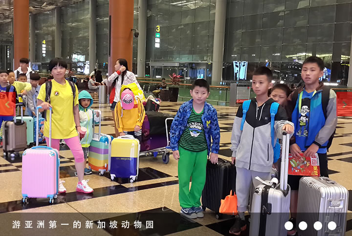

原贵州省武术协会副主席:周辛甫,江苏省徐州市人，出生于武术世家，年幼习武，1930年考入徐州武术馆，时年15岁。在国内著名拳师房龙英、李耀朴麾下全心学习，精于刀、剑、拳和对练，涉猎了枪、棍、戟、铲、镗、月、拐、鞭多种器械。1940年被国民党第七师聘为中尉武术教官，1945年转到的八十四师任上尉武术教官。由于功底扎实，口碑极好，遂被举荐到国民党总统府警卫总队任少校教官，作为李宗仁的贴身警卫。解放后，随国民党新编四十八师在广西新州起义，回到人们怀抱。举家南进途经贵州时，被这一方适宜的气候、秀丽的山水所吸引，于是落户安龙。在新中国成立初期，体育战绩一派欣欣向荣的景象，他一边参赛，一边育人
在全省武术比赛中一举夺得长拳冠军，在全国武术比赛，先后获得二、三等奖。在黔西南州培育了500多名少年选手，为安龙获取“全国武术之乡”荣誉奠定了人才基础。 1982年被推举为贵州省武术协会副主席。同时担任省武术队教练，在第一线拼杀。 1984年率队参加“全国第二界工运会”，夺得朴刀进枪对练一等奖、盾牌进刀对练二等奖，优异的成绩振奋了在努力拼搏的贵州武术界；1986年，省体委为筹办参加全国六运会，又将他从安龙招回，担任省武术队教练，经过顶着酷暑寒风一年的苦练，在1987年全国六运会上获预赛第三名，决赛第七名。返黔后，终因劳累过度病倒了。一年以后去世，葬于安龙县，享年74岁。

教学中始终坚持学习和发扬国内武术名家的传统和精髓，特别是继承和发扬了贵州省武术家周辛甫长达60余载的武术技艺，使我校教学方法别具一格独具特色，深受青少年欢迎。业余武术训练中我们结合教学实践与贵阳市体校联合办学，即保证训练场馆又拥有过硬的教学设施，共同推动了贵州武术事业向前发展。 “百年大计甘于奉献，育得桃李满园春”建校二十一年，共培训学生20000余人。在国际、国内、省市武术比赛中共获金牌436枚、银牌249枚、铜牌172枚，成为贵州史上获金牌最多的武术学校。为贵州争得了荣誉，为武术事业做出了贡献，向全国各大院校输送了一批优秀人才。